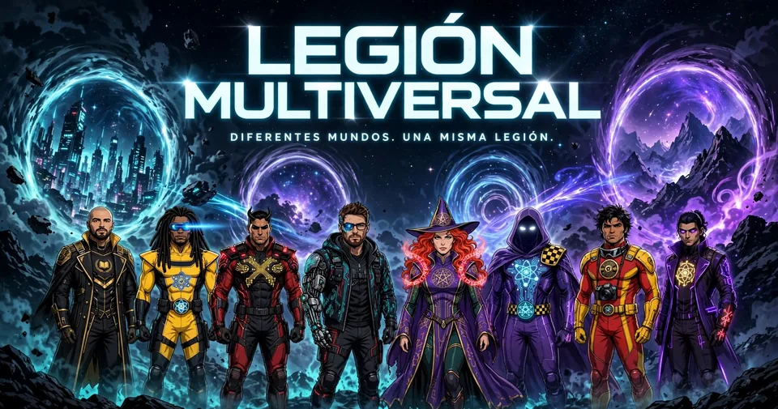
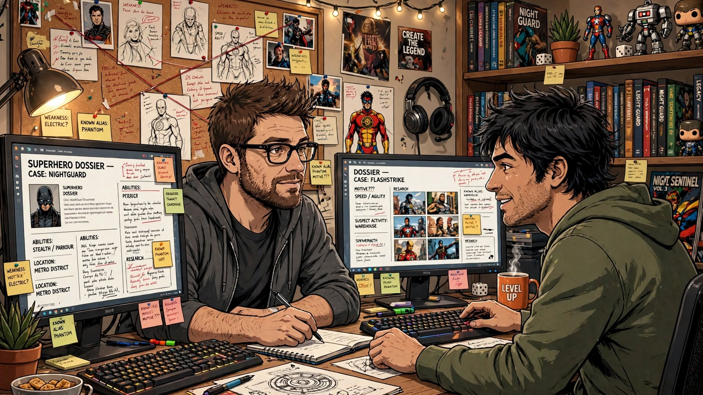
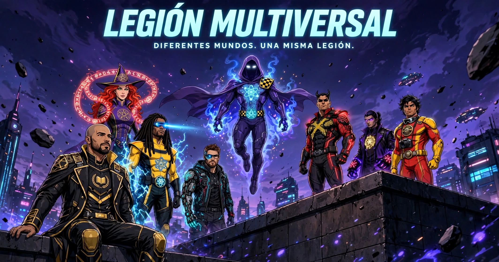
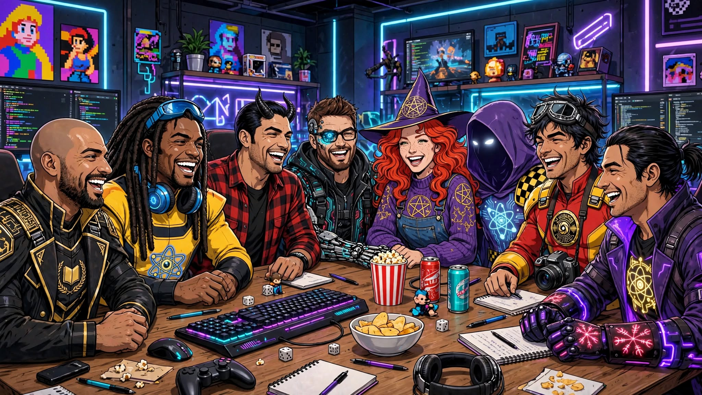
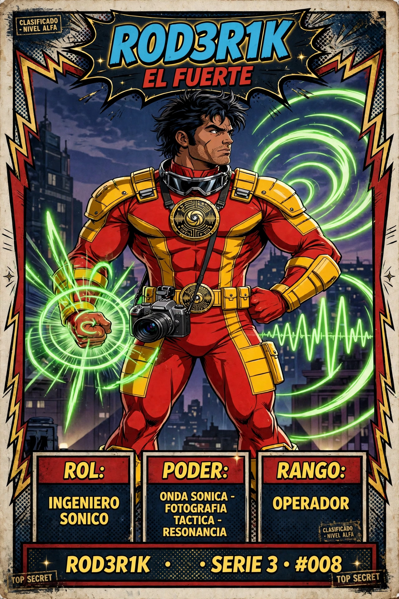
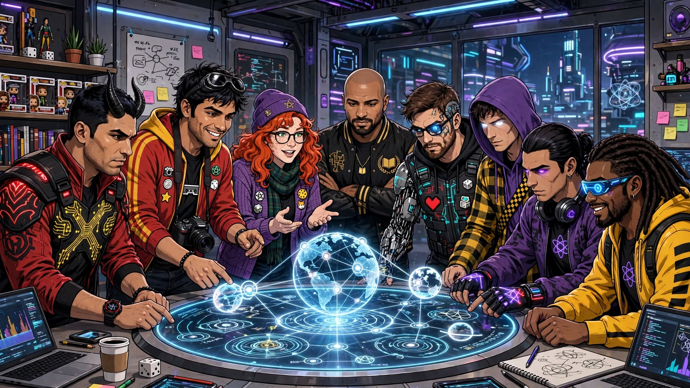
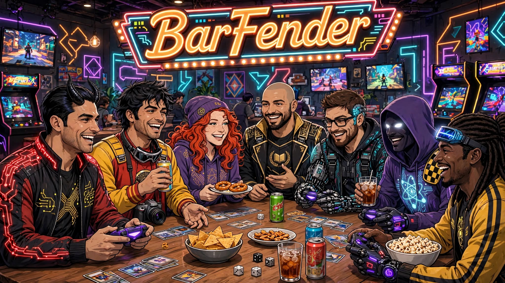
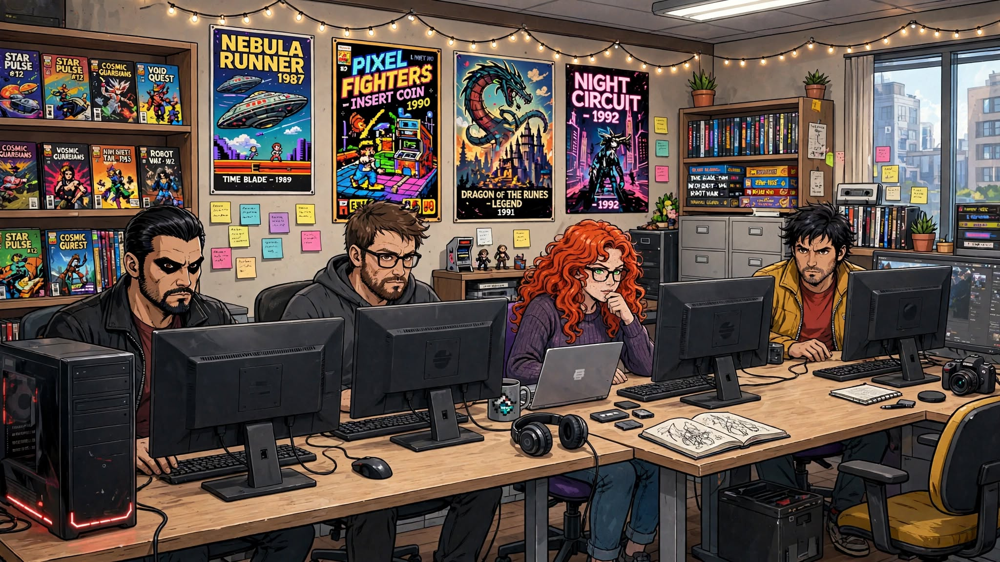
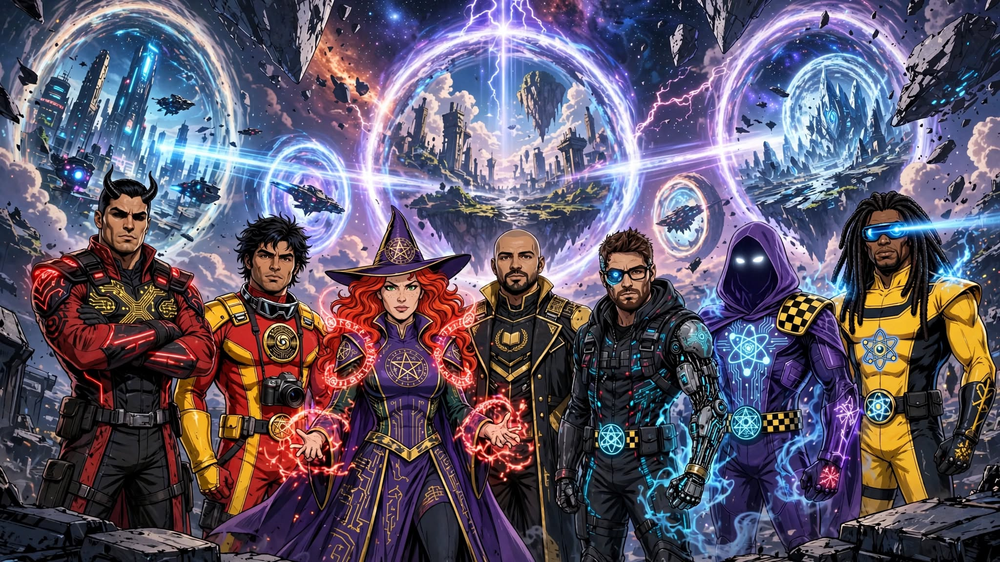

CAPÍTULO 00 · INICIO

CREADORES · GAMING · EXPERIENCIAS COMPARTIDAS
JUGAMOS, CREAMOS
Y CONECTAMOS UNIVERSOS.
Una comunidad de creadores independientes que convierte videojuegos, entretenimiento y cultura pop en experiencias compartidas. Cada voz conserva su identidad; juntos abrimos nuevos universos.
PROPUESTAS A MEDIDAMÉTRICAS CON FUENTEALCANCE ACORDADO
ESTADO DE TRANSMISIONES
Consultando la última captura pública de los canales…
El estado se actualiza con los datos públicos del colector; no es una conexión en tiempo real.
SEGUÍ A LOS MORIARTYS EN TWITCH ↗
01 / RECORRIDO GUIADO
EXPLORÁ EL UNIVERSO DE LA LEGIÓN
Tres caminos para conocer quiénes somos, descubrir lo que hacemos y encontrar tu forma de participar.
PERSONAS, HISTORIA Y VALORES
Descubrí cómo nació la Legión y quiénes construyen este universo.
JUEGOS Y EXPERIENCIAS REALES
Entrá a los directos y conocé colaboraciones que ya sucedieron.
PROPUESTAS Y OPORTUNIDADES
Conocé nuestras credenciales y acercá una idea para trabajar juntos.
02 / EXPERIENCIA DOCUMENTADA · EXPEDIENTE 001
BARFENDER
Cuatro creadores. Cuatro canales. Una misma partida.
Una experiencia colaborativa realizada por cuatro creadores y transmitida desde sus canales de Twitch. El expediente completo reúne participantes, registros audiovisuales, métricas y aprendizajes con sus fuentes.
EXPEDIENTE DOCUMENTADO001BARFENDER4 CREADORES · 4 CANALESEL CASO COMPLETO, SUS FUENTES Y REGISTROS ESTÁN EN EXPERIENCIAS.
03 / LAS PERSONAS DETRÁS DEL PROYECTO
NO SOMOS SOLAMENTE CANALES.
Somos personas con recorridos, intereses y talentos diferentes que eligieron compartir partidas, ideas y proyectos. La Legión existe porque cada identidad aporta algo propio a una comunidad común.
04 / POSIBILIDADES DE COLABORACIÓN
¿QUÉ PODEMOS CONSTRUIR JUNTOS?
Diseñamos experiencias que se adaptan al proyecto, a los creadores participantes y a los objetivos acordados.
INTEGRACIONES EN DIRECTO
Presencia de marca, menciones y demostraciones durante transmisiones.
EXPERIENCIAS MULTICANAL
Partidas, eventos y desafíos compartidos entre distintos creadores.
CONTENIDO Y CLIPS
Piezas breves y momentos destacados que prolongan cada experiencia.
ACTIVACIONES COMUNITARIAS
Dinámicas participativas alineadas con cada comunidad y campaña.
TU PRÓXIMA IDEA PUEDE EMPEZAR ACÁ.
Contanos qué querés lograr, qué fechas manejás y qué tipo de experiencia imaginás. Revisamos cada propuesta y definimos participantes, entregables y condiciones antes de confirmar cualquier acción.
INICIAR UNA CONVERSACIÓN →CAPÍTULO 01 · ORIGEN
ARCHIVO CENTRAL · PRIMERA ETAPA
TODO EMPEZÓ
EXPEDIENTE HISTÓRICO N.º 001
TODO EMPEZÓ
JUGANDO JUNTOS.
Antes de ser Legión Multiversal, fuimos un grupo de amigos que encontró en los videojuegos una forma de compartir, crear y convocar a otras personas. Esta es la historia de cómo aquella primera partida se convirtió en una comunidad.
ORIGENS3X-MENEVOLUCIÓNLEGIÓN MULTIVERSAL

01 / LA PRIMERA ETAPADOS AMIGOS.
DOS AMIGOS.
UN UNIVERSO POR DESCUBRIR.
La Legión no nació con una estructura cerrada. Fue tomando forma a medida que compartíamos partidas y se sumaban nuevas personas.
MARVEL RIVALS · EL COMIENZO
UNA IDEA ENTRE PARTIDAS
Demian y ROD3R1K empezaron a compartir partidas de Marvel Rivals y a imaginar un proyecto propio. Al principio fueron dos amigos con una idea en común; después se incorporó Akuma como tercer integrante y, más adelante, llegó ARDIPII como cuarto miembro. Con ellos quedó conformada la primera formación de S3X-MEN.
FORTNITE · NUEVAS EXPERIENCIAS
OTROS MUNDOS, NUEVAS PARTIDAS
Fortnite fue una de las experiencias que atravesaron el recorrido del proyecto. Cada juego abrió nuevas formas de encontrarnos, compartir y seguir construyendo una identidad común.
MÁS ALLÁ DEL JUEGO · NUEVAS POSIBILIDADES
UNA IDEA QUE EMPEZÓ A CRECER
Con el tiempo, la idea dejó de limitarse a jugar juntos: empezó a abrir espacios para compartir contenido, conectar creadores y sumar experiencias de aprendizaje y colaboración.
INCORPORACIONES POSTERIORES
CADA PERSONA, UNA IDENTIDAD PROPIA
Más adelante se incorporó Lady Moriarty, y Dave llegó como estudiante. También se sumaron Habitos (canal Habitos_Atomicos) y PATO — ORATORIS como colaboradores, no como integrantes de la formación: Habitos aporta desde la filosofía, los hábitos y la conversación; PATO — ORATORIS, desde la programación, la divulgación y los contenidos educativos. Cada participación encontró su propio lugar dentro del proyecto.
02 / EL CAMBIO DE IDENTIDAD
S3X-MEN FUE
S3X-MEN FUE
NUESTRO ORIGEN.
La evolución hacia Legión Multiversal no borra aquella primera etapa. La reconoce como el comienzo de una historia que creció en integrantes, intereses y posibilidades.
Dejamos atrás un nombre que pertenecía a nuestro primer equipo para adoptar una identidad capaz de reunir distintos mundos: gaming, entretenimiento, conocimiento, tecnología y desarrollo personal.
DIFERENTES MUNDOS. UNA MISMA LEGIÓN.
03 / EL PRESENTEEL UNIVERSO SIGUE
EL UNIVERSO SIGUE
EN EXPANSIÓN.
Hoy, Legión Multiversal reúne perfiles, canales y disciplinas diferentes bajo una identidad compartida. Cada integrante conserva su voz y aporta algo propio.

El origen explica de dónde venimos. El Roster muestra quiénes somos hoy.
CAPÍTULO 03 · ROSTER
ABRIR BITÁCORA GENERAL (VISTA PREVIA) →
CAPÍTULO 04 · ESTADÍSTICAS
LEGIÓN MULTIVERSAL · ACTIVIDAD Y ALCANCE
UNA LEGIÓN.
UNA LEGIÓN.
MÚLTIPLES UNIVERSOS.
Somos una comunidad de creadores independientes con canales, estilos y comunidades propias. Mostramos actividad pública verificable, experiencias compartidas y capacidades que podemos ofrecer según cada proyecto.
DATOS CON FUENTEPERÍODOS IDENTIFICADOSRESULTADOS SIN INFLAR
LMINFORME
DE IMPACTO
DE IMPACTO
01 / ACTIVIDAD OBSERVADA
LA LEGIÓN EN MOVIMIENTO
Indicadores construidos a partir de capturas públicas registradas. Cada dato debe leerse junto con su plataforma, período, fecha de captura y cobertura; una ausencia de datos no equivale a actividad cero.
ESTADO DE CADA CANAL
Una ficha por canal del roster, con estado actual y métricas observadas. Estar offline no significa que el canal esté fuera del seguimiento.
OTRAS PLATAFORMAS DEL ROSTER
Datos públicos por creador y plataforma. Cada unidad conserva su fuente y metodología; no se suma a espectadores ni a métricas de Twitch.
02 / NOVEDADES DEL ARCHIVO
LO QUE SE MUEVE EN LA LEGIÓN
Actualizaciones verificadas del proyecto y del trabajo compartido. Cada entrada conserva su fecha y una fuente para consultar el detalle.
NO SOLO CONTAMOS CANALES. DOCUMENTAMOS LO QUE HACEMOS JUNTOS.
Las colaboraciones reúnen creadores y comunidades alrededor de una misma experiencia. Cada expediente conserva participantes, transmisiones, clips y métricas con su contexto.
UN EQUIPO, DISTINTOS PERFILES Y FORMATOS.
Una marca puede conocer el canal compartido, evaluar perfiles individuales o explorar una acción multicanal. La propuesta se define según el objetivo, la disponibilidad y los datos verificables.
Fuentes, metodología y alcance de los datos
La actividad de Twitch se obtiene de Twitch Helix mediante data.json. El sistema consulta los canales de forma programada y conserva una ventana móvil máxima configurada. La cobertura efectiva depende de la antigüedad y continuidad de la recolección; no se interpreta la ventana configurada como un período completo de datos.
La cobertura de la última captura se informa según los canales esperados, resueltos y omitidos por el colector. Los directos detectados y las muestras en directo se cuentan a partir de los registros por canal.
Las métricas de otras plataformas se obtienen de platform-stats.json y se muestran por creador y plataforma (por ejemplo, YouTube Data API v3). No se suman suscriptores, vistas ni audiencias de servicios distintos como si fueran una misma unidad. Los datos ausentes o las plataformas sin credenciales no se estiman. Streams Charts se incorpora como fuente de referencia para análisis del roster cuando existan datos verificables y comparables.
Ver detalle técnico por canal
| Canal | Estado | Espectadores actuales | Categoría | Promedio observado | Pico observado | Horas observadas | Muestras | Cobertura del intervalo muestreado |
|---|
CAPÍTULO 02 · QUIÉNES SOMOS
NO BUSCAMOS QUE
TODOS SEAN IGUALES.
BUSCAMOS QUE CADA UNO
TENGA UN LUGAR.
Una Legión no se construye sumando nombres. Se construye cuando personas distintas eligen avanzar juntas.
CADA INTEGRANTE TIENE SU PROPIO UNIVERSO.
Su voz, su humor, sus intereses, sus tiempos y su manera de crear. No queremos borrar esas diferencias: queremos que convivan. Legión Multiversal es un espacio para compartir videojuegos, entretenimiento, ideas y proyectos sin tener que dejar de ser quien sos.
IDENTIDAD PROPIA
No pedimos que copies un molde. Valoramos las ideas, el estilo y la personalidad que cada integrante trae consigo.
COMPAÑERISMO REAL
Nos damos una mano, reconocemos el trabajo ajeno y entendemos que el crecimiento de otro integrante también puede fortalecer al conjunto.
RESPETO Y CONFIANZA
Escuchar, cuidar los espacios compartidos y respetar límites, tiempos y diferencias es la base para crear juntos.
LIBERTAD PARA CREAR
Las buenas ideas pueden venir de cualquier integrante. Queremos experimentar, proponer y probar formatos sin perder autenticidad.
CRECER EN EQUIPO
Compartimos aprendizajes, experiencias y oportunidades. Cada avance individual suma cuando se construye con generosidad.
HONESTIDAD CON LA COMUNIDAD
Comunicamos con claridad lo que hacemos, qué acuerdos existen y qué resultados podemos respaldar. La confianza no se negocia.
DEL MANIFIESTO A LA PRÁCTICA
LOS VALORES SE NOTAN EN CÓMO HACEMOS LAS COSAS.
No alcanza con nombrar principios. También importa cómo organizamos una idea, cómo trabajamos durante una experiencia y cómo contamos lo que pasó.
ACUERDOS CLAROS
Definimos el propósito, quiénes participan, qué aporta cada persona y qué está confirmado. Una propuesta no se comunica como un compromiso cerrado.
RESPETO Y AUTORÍA
Cuidamos los tiempos y límites de cada integrante, damos crédito a quienes crean y respetamos la identidad de cada canal. Colaborar no significa apropiarse del trabajo ajeno.
TRANSPARENCIA Y APRENDIZAJE
Compartimos resultados con contexto, reconocemos a quienes participaron y aprendemos de la experiencia. No inflamos cifras ni prometemos impactos que no podemos demostrar.
La participación es voluntaria. Cada integrante puede proponer, aceptar, ajustar o rechazar una actividad sin perder su lugar ni su identidad.
UN ESPACIO PARA PROPONER, APRENDER, COMPARTIR Y CREAR.
No prometemos fama, contratos ni crecimiento automático. Ofrecemos una cultura de colaboración, respeto y trabajo compartido, donde cada persona pueda aportar desde su propio lugar.
¿TE IDENTIFICÁS CON ESTA FORMA DE HACER LAS COSAS?
ENTONCES HAY UNA CONVERSACIÓN QUE PODEMOS EMPEZAR.
CAPÍTULO 05 · COMUNIDAD

NO HACE FALTA VENIR DEL MISMO UNIVERSOHAY UN LUGAR
HAY UN LUGAR
PARA VOS.
Distintas historias, juegos y formas de crear. Nos une la curiosidad, las ganas de compartir y el respeto por lo que cada persona aporta.
NO TENÉS QUE SER ESPECTADOR PARA SENTIRTE PARTE.
Podés llegar para descubrir un canal, quedarte por una partida, proponer una idea o encontrar personas con quienes crear algo nuevo. La Legión se construye con participación real, no con una lista de nombres.
NO SUMAMOS NOMBRES. CONSTRUIMOS VÍNCULOS.
Las nuevas incorporaciones y colaboraciones se evalúan por afinidad con los valores, aporte creativo, disponibilidad conversada y respeto por la autonomía de cada canal. La expansión es gradual: primero conocemos a las personas, después probamos una experiencia y finalmente documentamos lo que aprendimos.
- Identidad y voz propias, sin exigir uniformidad.
- Participación voluntaria y expectativas claras.
- Compatibilidad de formatos y objetivos antes de anunciar una colaboración.
- Revisión de resultados y aprendizajes antes de repetir o ampliar una iniciativa.
CONOCÉ NUESTROS UNIVERSOS
Explorá quiénes somos, qué juega cada integrante y qué propuestas conviven dentro del roster. Cada creador mantiene su canal y su personalidad.
ENTRÁ EN LA CONVERSACIÓN
Acompañá los directos, compartí ideas, sugerí juegos y sumate a los encuentros cuando se anuncien. Las actividades se comunican cuando están confirmadas.
¿TE GUSTARÍA CONSTRUIR CON NOSOTROS?
Si creás contenido y te interesa colaborar, conocé cómo presentar tu perfil. No necesitás copiar el estilo de nadie: queremos conocer tu propia voz y lo que podrías aportar.
02 / CÓMO CONVIVIMOSDISTINTOS CANALES.
DISTINTOS CANALES.
UNA EXPERIENCIA COMPARTIDA.
La comunidad no exige que todos creen igual ni que estén disponibles al mismo tiempo. La participación se construye respetando la identidad y los tiempos de cada persona.
CADA VOZ CONSERVA SU IDENTIDAD
Cada creador mantiene su canal, su estilo, sus intereses y su vínculo con su propia audiencia. Compartir un universo no significa convertirse en una copia de los demás.
LAS ACTIVIDADES SE CONFIRMAN
Los encuentros se comunican cuando existen detalles definidos. Una idea o una posibilidad no se presenta como evento, fecha o convocatoria confirmada.
PARTICIPAR ES VOLUNTARIO
Podés acompañar, proponer o sumarte según tus ganas y disponibilidad. Cada experiencia se coordina con quienes deciden participar.
HISTORIAS QUE YA COMPARTIMOSUNA EXPERIENCIA, DISTINTAS PERSPECTIVAS.
Conocé cómo una partida puede convertirse en una colaboración documentada entre canales y comunidades.
Una comunidad crece cuando hay lugar para nuevas voces.
CAPÍTULO 09 · EN VIVO
LEGIÓN MULTIVERSAL · EN VIVO
CENTRAL DE TRANSMISIONES · PROGRAMACIÓN ABIERTA
Si la Legión está en vivo, la pantalla es suya.
La señal principal se adapta a los canales que estén transmitiendo. Cuando no haya directos confirmados, la central se transforma en una programación interactiva de clips, VODs, videos y horarios declarados. Vos elegís qué reproducir.
Preparando la programación de la Legión…
CAPÍTULO 06 · ALIANZAS
LEGIÓN MULTIVERSAL · CREDENCIALES Y OPORTUNIDADES
ALIANZAS Y OPORTUNIDADES
Creadores independientes. Credenciales atribuidas. Propuestas construidas en conjunto.
Legión Multiversal conecta creadores independientes con trayectorias, plataformas y comunidades diferentes. Podemos diseñar experiencias individuales o grupales junto a estudios, publishers, agencias y marcas, según los perfiles participantes, los objetivos y los recursos acordados para cada propuesta.
01 / CANAL COMPARTIDO
CREDENCIALES COLECTIVAS
Reconocimientos vinculados al proyecto y al canal compartido de Los Moriartys.
PLATAFORMA · LURKITPARTNER CREATOR
LOS MORIARTYS
Los Moriartys figura como Partner Creator de Cinderia y Enshrouded dentro de Lurkit. Esta participación corresponde al canal compartido y constituye una credencial dentro del ecosistema creator.
ⓘ02 / TRAYECTORIAS PERSONALES
CREDENCIALES INDIVIDUALES
Las acreditaciones personales pertenecen a cada creador y a su canal. No se atribuyen automáticamente a toda la Legión.

CREDENCIAL INDIVIDUAL
TWITCH PARTNERROD3R1K
Reconocimiento correspondiente a su canal individual de Twitch.
03 / ECOSISTEMA CREATOR
PLATAFORMAS Y HERRAMIENTAS
Servicios que pueden facilitar el descubrimiento de oportunidades, la gestión de solicitudes o la participación en programas.
LURKIT
Programas para creadores, campañas y oportunidades vinculadas a videojuegos. ⓘ
SITIO OFICIAL ↗KEYMAILER
Herramienta del ecosistema creator para descubrir campañas y gestionar solicitudes de acceso a juegos.
SITIO OFICIAL ↗EPIC GAMES
Programa Support-A-Creator y códigos de creador. Los códigos identifican a sus titulares. ⓘ
INFORMACIÓN DEL PROGRAMA ↗04 / CONTEXTO REGIONAL
LATINOAMÉRICA NO ES UN MERCADO SECUNDARIO
El gaming regional combina escala, crecimiento y consumo en distintas plataformas. Estos datos describen el mercado, no la audiencia propia ni el alcance de los canales de Legión Multiversal.
BENCHMARK DE INDUSTRIA · NO ES AUDIENCIA PROPIA
372,3 MJUGADORES EN LATINOAMÉRICAEstimación regional para 2025 · Newzoo
+6,4 %CRECIMIENTO ANUAL DE INGRESOSMercado LATAM · proyección reportada para 2025
3 PLATAFORMASMÓVIL · PC · CONSOLAEl mercado regional distribuye ingresos relevantes entre los tres ecosistemas
UNA SEÑAL DESDE ARGENTINA
Un estudio de Comscore realizado en 2024 sobre 1.050 gamers activos de 18 a 65 años informó que el 40 % llevaba más de diez años jugando. El gaming local no debe reducirse a una audiencia exclusivamente adolescente.
CONSULTAR RESULTADOS DEL ESTUDIO ↗QUÉ SIGNIFICA PARA UNA PROPUESTA
Definir país, idioma, huso horario, plataforma y perfil de comunidad antes de diseñar una activación. Latinoamérica no es una audiencia homogénea: el encaje del juego y el formato importa más que una cifra regional aislada.
FUENTE: GAMESCOM LATAM / NEWZOO 2025 ↗Alcance de los datos: las cifras regionales son contexto de industria publicado a partir de Newzoo Global Games Market Report 2025. No son seguidores, espectadores, usuarios únicos ni resultados atribuibles a nuestros creadores.
05 / PROPUESTA DE VALOR
QUÉ PODEMOS CONSTRUIR JUNTOS
Cuatro formatos para diseñar experiencias con estudios, publishers, agencias y marcas. Cada propuesta se adapta a sus objetivos y a las capacidades disponibles.
INTEGRACIONES EN DIRECTO
Presencia visual de marca, menciones naturales, demostraciones y participación durante una transmisión.
EXPERIENCIAS MULTICANAL
Partidas cooperativas, eventos compartidos, desafíos y experiencias coordinadas entre creadores.
CONTENIDO Y CLIPS
Momentos destacados, piezas breves y publicaciones posteriores para extender la conversación más allá del directo.
ACTIVACIONES COMUNITARIAS
Dinámicas participativas, desafíos, encuentros y sorteos cuando estén autorizados y acordados.
Los formatos son posibilidades de colaboración, no campañas contratadas ni servicios garantizados. Integrantes, recursos, alcance y entregables se definen para cada propuesta.
GUÍA DE ACTIVACIÓN · EJEMPLOS ILUSTRATIVOS
DE LA IDEA A UN PLAN CONCRETO
Estos escenarios muestran cómo puede tomar forma una propuesta. No son paquetes cerrados, tarifas, campañas contratadas ni compromisos de entrega: cada alcance se cotiza y confirma por escrito según el proyecto.
UNA VOZ, UN CANAL
- OBJETIVO
- Presentar un juego, actualización o producto a comunidades afines.
- ACTIVACIÓN POSIBLE
- Una sesión de prueba, reseña o cobertura desde el canal del creador cuyo contenido y comunidad encajen con el proyecto.
- ENTREGABLES A DEFINIR
- Creador participante, duración, fecha, menciones acordadas y enlaces al contenido publicado.
- TIEMPO DE EJECUCIÓN
- Se acuerda según disponibilidad, calendario, aprobaciones y alcance del proyecto.
- LECTURA DE RESULTADOS
- VOD, clips y métricas observadas por canal, siempre con período y fuente identificados.
UNA EXPERIENCIA, VARIAS VOCES
- OBJETIVO
- Mostrar distintas perspectivas de una misma experiencia y conectar comunidades.
- ACTIVACIÓN POSIBLE
- Partida cooperativa, desafío o evento coordinado entre creadores con identidades y canales propios.
- ENTREGABLES A DEFINIR
- Participantes, coordinación, accesos, calendario, reglas, menciones y registro audiovisual.
- TIEMPO DE EJECUCIÓN
- Se acuerda según disponibilidad, calendario, aprobaciones y alcance del proyecto.
- LECTURA DE RESULTADOS
- Resumen por canal, enlaces de VOD/clips y métricas individuales. No se suman audiencias como usuarios únicos sin deduplicación verificable.
EL CONTENIDO CONTINÚA
- OBJETIVO
- Extender la conversación antes o después de una transmisión.
- ACTIVACIÓN POSIBLE
- Piezas derivadas de una experiencia —clips, videos o publicaciones— distribuidas en las plataformas donde cada participante ya crea contenido.
- ENTREGABLES A DEFINIR
- Piezas, plataformas disponibles, fechas, derechos de uso y aprobaciones de cada creador.
- TIEMPO DE EJECUCIÓN
- Se acuerda según disponibilidad, calendario, aprobaciones y alcance del proyecto.
- LECTURA DE RESULTADOS
- Enlaces publicados y estadísticas nativas disponibles de cada plataforma, sin mezclar vistas, impresiones ni espectadores.
Antes de confirmar: se acuerdan por escrito el objetivo, los perfiles participantes, accesos o materiales, entregables, fechas, compensación si corresponde, divulgación publicitaria, derechos de uso y métricas que podrán reportarse. No se garantiza alcance, conversiones ni resultados comerciales.
06 / ARCHIVO DE EXPERIENCIAS
LAS EXPERIENCIAS TAMBIÉN HABLAN
Las credenciales muestran trayectorias. Los expedientes documentan cómo trabajamos en equipo.
ARCHIVO DE EXPERIENCIAS
PARTIDAS, EVENTOS Y PROYECTOS COMPARTIDOS
Los casos con participantes, registros audiovisuales, métricas y aprendizajes se desarrollan en Colaboraciones, con un expediente principal por experiencia.
TRANSPARENCIA Y ALCANCE
Las credenciales identifican programas, plataformas o accesos; no equivalen por sí mismos a patrocinios económicos, contratos ni pagos. La participación en un programa o plataforma no equivale a una alianza comercial. No implica, por sí sola, patrocinio, pago ni contrato. El acceso a BarFender fue facilitado mediante Keymailer y no se presenta como patrocinio ni como campaña remunerada. Toda colaboración comercial se informa por separado cuando está documentada y acordada.
HABLEMOS DE UNA COLABORACIÓN
Desarrolladores, publishers, agencias y marcas pueden acercar propuestas de campañas, cobertura, accesos anticipados o activaciones con la comunidad.
Para evaluar una propuesta, compartí la marca o juego, objetivos, fechas, plataformas, entregables esperados y presupuesto disponible.
losmoriartys@gmail.com →CAPÍTULO 07 · COLABORACIONES
ARCHIVO CENTRAL · LEGIÓN MULTIVERSAL
CUANDO LOS UNIVERSOS
CUANDO LOS UNIVERSOS
SE ENCUENTRAN.
Las colaboraciones son parte de nuestra historia. Este archivo registra partidas compartidas, directos simultáneos, eventos y proyectos en los que los integrantes de la Legión unen sus comunidades para crear algo en común.
BITÁCORA VIVA · CAMPAÑAS Y ENCUENTROS
EXPLORAR BITÁCORA GENERAL (VISTA PREVIA) →

01 / EL ARCHIVO
NO SON SOLO PARTIDAS.
SON EXPERIENCIAS CONSTRUIDAS EN EQUIPO.
Cada expediente conserva participantes, objetivo, ejecución, contenido publicado, resultados respaldables y aprendizajes. Las cifras individuales y compartidas se presentan por separado para que cada dato tenga contexto. Una oportunidad o postulación no se convierte en caso de éxito hasta que la actividad se realiza y queda documentada.
CREADORES
Visibilidad para cada integrante y su canal.
CONTENIDO
VOD, clips y momentos que prolongan la experiencia.
COMUNIDADES
Distintas audiencias reunidas alrededor de una actividad común.
TRANSPARENCIA
Métricas con fuente, período y alcance identificados.
CASO COLABORATIVO DOCUMENTADO · N.º 001
BARFENDER
Cuatro creadores. Cuatro canales. Una misma partida.
EXPERIENCIA
001
05 · 11 · 2026
001
05 · 11 · 2026


UNA SESIÓN, CUATRO PUNTOS DE VISTA.

El 5 de noviembre de 2026, Demian, Lady Moriarty, ROD3R1K y Akuma se reunieron para jugar BarFender y colaborar en directo desde sus propios canales de Twitch. La actividad compartida se extendió durante aproximadamente una hora y media.
La propuesta permitió mostrar una misma experiencia desde cuatro comunidades y estilos de transmisión, generar interacción entre creadores y conservar momentos destacados para seguir difundiendo la actividad después del directo.
Juego: BarFender
Publisher: Rock Paper Publisher
Desarrollador: Proto Division
Acceso al juego: facilitado mediante Keymailer.

EXPERIENCIA 001 · 4 CREADORES · 4 CANALES
03 / REGISTROS DE TRANSMISIÓN
LA ACTIVIDAD, DESDE CADA CANAL
Se localizaron tres VOD públicos. Akuma participó en simultáneo, pero no se localizó un VOD público para incorporar al archivo.
VOD 01 · LOS MORIARTYS1:15:36ABRIR TRANSMISIÓN ↗
VOD 02 · LADY MORIARTY011:13:58ABRIR TRANSMISIÓN ↗
VOD 03 · TheR0D3R1K1:14:01ABRIR TRANSMISIÓN ↗
3 VOD DE ~1 H 14 MINDURACIÓN INDIVIDUAL APROXIMADA · LOS VOD SON TRES TRANSMISIONES SIMULTÁNEAS, NO TIEMPO ACUMULADO.
04 / ARCHIVO AUDIOVISUAL
CUATRO MOMENTOS PARA VOLVER A LA NOCHE
Una selección de momentos concretos de la sesión: cada miniatura abre el clip original en Twitch.


05 / VALOR PARA MARCAS Y PUBLISHERS
¿QUÉ DEMUESTRA ESTA EXPERIENCIA?
COORDINACIÓN MULTICANAL
Cuatro creadores pudieron organizar una actividad compartida y emitirla desde sus canales individuales.
CONTENIDO DESDE DISTINTAS VOCES
Una misma experiencia generó perspectivas, reacciones y momentos diferentes para cada comunidad.
CONTINUIDAD DESPUÉS DEL DIRECTO
Los VOD y los ocho clips identificados permiten conservar y prolongar la vida del contenido.
COMUNIDADES CONECTADAS
La actividad ofrece un ejemplo concreto de colaboración entre creadores sin borrar la identidad de cada canal.
CONTINUIDAD · EXPEDIENTE 001
UNA EXPERIENCIA QUE TUVO SEGUNDA SESIÓN.
La bitácora conserva cada encuentro con su fecha, canales participantes y métricas observadas. Los datos de muestreo se distinguen de las analíticas oficiales y de los VOD.
SESIÓN 02 · 10 NOV 2026
REGISTRO DE MUESTREOBARFENDER · SEGUIMIENTO EN DOS CANALES
Una nueva noche de Barfender emitida desde los canales de Akuma y TheR0D3R1K.
AKUMA · MUESTRAS2Muestra insuficiente para publicar promedio o pico.
TheR0D3R1K · MUESTRAS4Promedio observado: 26,3Pico observado: 33
Metodología: registros de Twitch Helix capturados el 10/11/2026. Se muestran promedios y picos de las muestras disponibles, no espectadores únicos, promedio oficial del directo, horas vistas ni alcance conjunto. La captura no sustituye los VOD; sus enlaces podrán añadirse cuando estén disponibles.
EL ARCHIVO SIGUE ABIERTOCADA COLABORACIÓN
CADA COLABORACIÓN
SUMA UNA NUEVA HISTORIA.
La próxima bitácora podrá documentar otro juego, evento, encuentro, directo conjunto o proyecto comunitario. Cada experiencia tendrá su propio expediente y conservará el registro de quienes la hicieron posible.
¿REPRESENTÁS UN ESTUDIO, PUBLISHER, AGENCIA O MARCA?
Podemos conversar sobre experiencias multicanal, contenido cooperativo y activaciones con creadores.
CONTACTAR A LA LEGIÓN →CAPÍTULO 08 · ARSENAL
ARSENAL MULTIVERSAL
ONCE JUEGOS · UNA MISMA ESCUADRA
Distintos mundos. Nuevas formas de jugar juntos.
Este es el repertorio de experiencias que proponemos para reunir al roster y a la comunidad: competir, cooperar, improvisar y crear momentos que valga la pena recordar.
La selección combina fiesta, deducción social, terror, supervivencia y construcción. No es un ranking ni una lista cerrada: es un punto de partida para nuestras próximas sesiones.
SELECCIÓN DE LA LEGIÓN
11 JUEGOS PARA JUGAR EN EQUIPO
Cada juego abre una dinámica distinta. Elegí una portada para conocer la propuesta y consultar su tienda oficial.

Fiesta · voz · humor
01. Mimic Party
Escuchá un sonido y reproducilo con tu voz: todos imitan al mismo tiempo y la ronda se convierte en una competencia de ocurrencias, imitaciones y sabotajes. Ideal para que el chat también se divierta con las reacciones.
Jugadores: 1–5 online.
Ver en Steam ↗
Party · escondidas · camuflaje
02. MECCHA CHAMELEON
Pintate para copiar los colores del escenario, encontrá el escondite perfecto y tratá de pasar desapercibido. Una propuesta visual, rápida y muy divertida para jugar con amigos y generar momentos absurdos en directo.
Plataforma: PC · Steam.
Ver en Steam ↗
Terror cooperativo · exploración
03. Backrooms: Escape Together
Entren juntos en espacios inquietantes, resuelvan obstáculos y busquen la salida mientras algo los persigue. El chat de proximidad y los sustos compartidos pueden convertir cada expedición en una historia distinta.
Jugadores: 1–6 en cooperativo online.
Ver en Steam ↗
Terror cooperativo · física caótica
04. R.E.P.O.
Recuperen objetos valiosos en escenarios llenos de criaturas. La física obliga a coordinar cada movimiento, pero cualquier traslado puede terminar en un desastre hilarante.
Jugadores: hasta 6 online.
Ver en Steam ↗
Horror · creación de videos
05. Content Warning
Entren a filmar criaturas y situaciones aterradoras para conseguir visualizaciones. La misión es volver con el material grabado; lo que pase durante la expedición suele ser lo mejor del episodio.
Jugadores: hasta 4 online.
Ver en Steam ↗
Deducción social · oficina
06. Dale & Dawson Stationery Supplies
En una oficina, algunos cumplen tareas y otros se hacen pasar por empleados productivos. El gerente debe descubrir quién está trabajando y quién está fingiendo. Perfecto para acusaciones, alianzas y actuaciones sospechosas.
Modo: multijugador online de deducción social.
Ver en Steam ↗
Terror cooperativo · extracción
07. Lethal Company
Una cuadrilla explora lunas abandonadas para recolectar chatarra y cumplir la cuota de la Compañía. Comunicación, nervios y decisiones desesperadas: una combinación ideal para sustos y clips.
Modo: cooperativo online · PC/Steam.
Ver en Steam ↗
Sandbox · creatividad · comunidad
08. Minecraft
Un mundo compartido para construir, explorar, sobrevivir y desarrollar proyectos con la comunidad. Puede convertirse en una aventura continua de la Legión, con objetivos y eventos propios.
Ediciones: Java y Bedrock tienen compatibilidades distintas; Bedrock permite juego cruzado entre plataformas compatibles.
Tienda oficial de Minecraft ↗
Fiesta · engaño · deducción social
09. Among Us
Trabajen juntos para completar tareas mientras intentan descubrir a los impostores. Reuniones, coartadas, traiciones y acusaciones hacen que cada partida dependa de la personalidad del grupo.
Jugadores: 4–15 en partidas locales u online.
Ver en Steam ↗
Supervivencia · construcción · terror
10. The Forest
Tras un accidente aéreo, hay que explorar un bosque hostil, levantar refugios, conseguir recursos y sobrevivir a sus habitantes. Una campaña para compartir exploración, tensión y decisiones en equipo.
Modo: supervivencia con multijugador cooperativo.
Ver en Steam ↗BARFENDER
✓ JUGADO POR LA LEGIÓN
Cooperativo · humor · simulación
11. BarFender
Experiencia cooperativa realizada por cuatro creadores y documentada en el Expediente 001, con una segunda sesión de seguimiento.
VER EXPEDIENTE 001 →Ver en Steam ↗Guía para organizar las sesiones
Primero la experiencia; después, la plataforma
Las fichas enlazan a la tienda oficial de cada juego. Antes de convocar al roster, confirmá que todos tengan la misma edición o una versión compatible. En Minecraft, distinguí Java de Bedrock; en los títulos de Steam, revisá los requisitos y el modo online de la ficha vigente.
CAPÍTULO 10 · RECLUTAMIENTO
SUMATE A LA LEGIÓN
LEGIÓN MULTIVERSAL · NUEVOS CONTACTOS
UN LUGAR PARA CREADORES QUE QUIEREN CRECER EN EQUIPO.
Presentá tu perfil para que podamos evaluar una posible incorporación al roster. Si representás un estudio, publisher o marca, ingresá por el recorrido independiente «Para marcas». Cada propuesta se evalúa según su encaje, disponibilidad y alcance real.
RECORRIDO 01 · INCORPORACIÓN
TU EXPEDIENTE DE INGRESO
Contanos quién sos, dónde creás contenido y qué te gustaría construir con la Legión. No hace falta preparar un informe de estadísticas para el primer contacto.
RECORRIDO 02 · CONTACTO COMERCIAL
CONTANOS QUÉ TENÉS EN MENTE
Compartí la información inicial del proyecto. Podemos evaluar propuestas para la Legión en conjunto o para creadores individuales, según el objetivo y el encaje.
El formulario transmite tu presentación mediante un canal seguro con verificación anti-spam. Solo se confirma el envío cuando el servidor recibe el mensaje correctamente.
EXTRA · MAPA MULTIVERSAL
UN MAPA. MUCHOS UNIVERSOS.
UNA MISMA LEGIÓN.
Este mapa reúne a los integrantes y sus especialidades alrededor del núcleo común. Las conexiones representan pertenencia a la Legión, no jerarquías ni alianzas comerciales.
01 / CONSTELACIÓN DEL ROSTER
CARTOGRAFÍA MULTIVERSAL
Seleccioná un nodo para abrir el expediente individual. El mapa se construye desde el roster canónico.
02 / RECORRIDO DE EXPLORACIÓN
TUS MISIONES
Pequeños recorridos para descubrir el archivo, sus integrantes y las actividades de la comunidad.
03 / DISTINCIONES
INSIGNIAS DE EXPLORACIÓN
Se desbloquean al recorrer el sitio. Son logros de navegación personales, no premios oficiales de plataformas.
Tu progreso se guarda únicamente en este navegador. No se sincroniza entre dispositivos ni se comparte con otros integrantes. Si el navegador bloquea el almacenamiento local, el avance se conserva solo mientras la página permanezca abierta.